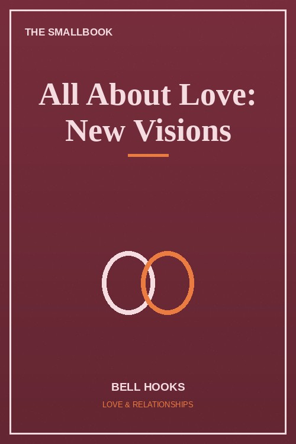

Library › Love & Relationships
All About Love: New Visions - Summary & Key Lessons

America is hungry for love and confused about what it is. bell hooks offers a definition with teeth.
📖 OPEN THE FULL INTERACTIVE BREAKDOWN →🌐 Read it in Hindi, Hinglish, Gujarati, Tamil & 22 more languages, with audio.
💡 The Big Idea
bell hooks argues that a culture obsessed with love has no shared definition of it, so people call attachment, possession and even harm by love's name. Borrowing M. Scott Peck definition, she calls love the will to extend yourself for another's spiritual growth, built from care, honesty, responsibility and respect. Where there is lying, domination or abuse, there is no love, whatever the feelings involved. That single standard rearranges everything.
🧠 The 8 Key Lessons
Lesson 1: Define Love or Be Defined by Confusion
Clarity: Give Love Words
bell hooks begins with the dictionary problem: everyone uses the word love to mean different things, often mere fondness or desire, then wonders why love hurts. Her definition is deliberately demanding: love is the will to nurture growth, your own and another's. Anything that diminishes a person, however intense the feeling, fails the definition. Clarity is protection: a shared, strict meaning makes it possible to say this is not love and leave.
📖 Example: A partner who monitors your phone, isolates you from friends and calls it love because he feels so much is, by this definition, describing the opposite of love. The feeling is real. The love is not. bell hooks gives readers the vocabulary to separate the two before the confusion costs years. Read the full example →
⚡ Do this: Write your definition of love in one sentence using verbs, not feelings. Test your closest relationship against it this week.
Lesson 2: Honesty Is the Foundation, Not a Feature
Justice: Childhood Love Lessons
Lying, even kind lying, corrodes the trust love stands on. bell hooks insists that truth-telling is not one virtue among many but the ground of intimacy: to know someone, they must risk being known, and that requires a household, childhood or adult, where honesty is not punished. Many people learned early that lying keeps the peace. In adult love that lesson becomes the slow leak that empties everything.
📖 Example: Families where children are punished for true answers raise adults who edit themselves in love. bell hooks describes learning as a girl that honesty brought pain, then spending adulthood unlearning it. The partner who flinches at your honesty may be fighting their upbringing, not you. Read the full example →
⚡ Do this: Tell one small, kind truth this week that you would normally smooth over. Notice what it costs and what it builds.
Lesson 3: Abuse and Love Cannot Share a House
Greed: Simply Love
The book's most quoted line of argument: where there is abuse, neglect or coercion, love is absent, full stop. bell hooks rejects the cultural script that suffering proves devotion and that women especially should endure harm as love's price. Love and abuse are opposites, because love wills the other's growth and abuse wills control. Holding that line is what makes the rest of her tenderness credible rather than naive.
📖 Example: The phrase if he did not love me he would not be so jealous is dissected as a cultural lie. Jealousy of that kind is about possession. bell hooks writes for the reader who has been told endurance is virtue: leaving harm is not failing at love; it is finally defining it. Read the full example →
⚡ Do this: If any relationship of yours involves fear, name it plainly to one trusted person this week. Naming is the first act of the definition.
Lesson 4: Self-Love Is Learned Against Resistance
Values: Living by a Love Ethic
Many people were taught to give love away and feel shame receiving it, especially from themselves. bell hooks treats self-love as a practice with components: self-acceptance, self-esteem, self-assertion, not positive thinking. A person who cannot affirm their own worth will either demand constant proof from partners or accept treatment that confirms the wound. The love ethic she proposes applies at home, at work and in the street, not just in romance.
📖 Example: She describes women who can nurture everyone in their lives except the woman in the mirror, then wonder why partners treat them as endlessly available. The supply runs out because it was never replenished at the source. Read the full example →
⚡ Do this: Practise one act of self-regard daily for a week: rest without earning it, a boundary kept, a compliment accepted without deflection.
Lesson 5: Love and Domination Cannot Coexist
Greed: Simply Love
bell hooks extends the definition outward: a love ethic refuses domination in every form, of partners, children, workers, strangers. Households run on fear teach children that love and control are the same weather. Adults then reproduce the climate and call it personality. Her standard is bracing because it audits power, not feelings: whoever holds power in a relationship is responsible for refusing to use it as a weapon.
📖 Example: The parent who says this hurts me more than you while punishing is teaching the fusion bell hooks warns about. Children raised in that weather often choose partners who reproduce it, because it feels like home. Seeing the pattern is how the climate changes. Read the full example →
⚡ Do this: Audit one power you hold, over a partner, child or junior, and refuse one use of it as leverage this week.
Lesson 6: Greed Is the Enemy Dressed as Ambition
Greed: Simply Love
A culture that trains people to want without limit, bell hooks argues, untrains them for love, which requires enoughness, attention and time. The greedy heart treats people as acquisitions and relationships as upgrades. Her counter-practice is simplicity: choosing depth over accumulation in things and in people, so that care has somewhere to land. Love, unlike greed, is satisfied by presence rather than novelty.
📖 Example: The dater who keeps a roster, always upgrading, is greed's student; so is the spouse already shopping mentally for a better model. bell hooks calls both by the same name and prescribes the same medicine: commit attention to what is here. Read the full example →
⚡ Do this: Practise enoughness for a week: no upgrading, of phone, purchase or person. Put the saved attention into one relationship.
Lesson 7: Forgiveness Is Not Forgetting, It Is Refusing Revenge
Healing: Love in Action
bell hooks treats forgiveness as a discipline of the injured: not excusing the act, not reconciling automatically, but releasing the wish to make the other suffer as payment. Without it, hurt people build identities around wounds and pass them on. With it, even relationships that must end can end without poison. Forgiveness, in her account, is something love does for the forgiver's freedom first.
📖 Example: She writes of families where a betrayal is retold at every gathering for thirty years, interest collected on a debt nobody can repay. The story keeps the wound employed. Forgiveness retires it, not by declaring it small but by declaring it finished. Read the full example →
⚡ Do this: Name one old injury you still collect interest on. Write what releasing the revenge, not the memory, would make possible.
Lesson 8: Love Is a Practice for Communities, Not Just Couples
Community: Loving Communion
The book closes by widening the lens: societies organised by a love ethic, honesty, care, no domination, would raise different children, run different workplaces and argue differently in public. bell hooks insists the personal work is not private self-improvement but the smallest unit of cultural change. Every household where love is defined and practised becomes evidence that another way of living together is possible.
📖 Example: A neighbourhood where people know each other's names, where the elderly are checked on and children are safe with many adults, is her politics at street level. No legislation creates it; ten thousand small practices do. Read the full example →
⚡ Do this: Do one act of neighbourly love this week that costs twenty minutes: a check-in, a shared meal, help unasked.
✅ 5-Step Action Plan
- Write your one-sentence definition of love, in verbs.
- Tell one small kind truth you usually smooth over.
- Audit one relationship for fear; name what you find to a trusted person.
- Practise daily self-regard for a week: rest, a boundary, acceptance.
- Refuse the script that suffering proves devotion, in yourself and others.
- Bring one honest conversation to your partner about how you each learned love.
- Judge love by growth: are we both becoming more ourselves?
⚠️ When This Doesn't Work
bell hooks writes from an American, feminist and spiritual standpoint and addresses her culture directly. Readers elsewhere will translate some examples, but the definition travels intact.
💀 The Graveyard Proves It
💬 Best Quotes from All About Love: New Visions
- “Love is an action, never simply a feeling.”
- “There can be no love without justice.”
- “To love well is the most difficult and important work there is.”
Interactive version: mark lessons as read, listen in your language, share quote cards.